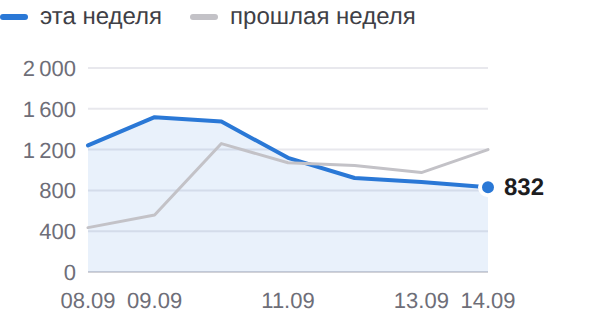
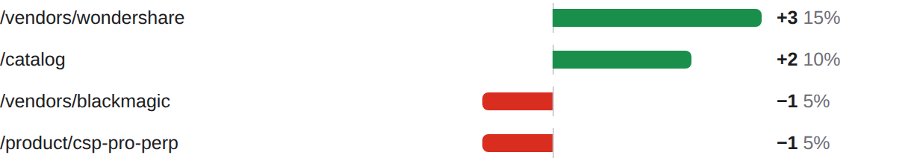
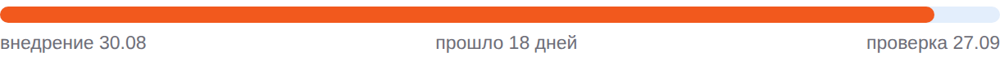

BIZSoft Growth Intelligence Daily Search, Demand & Experiment Control · 17.09.2026
Яндекс по 14.09 · Google по 14.09 · Метрика по 16.09 · спрос 15.09 | | × | ПОИСК — снижение | | | ✓ | ДАННЫЕ — сверено | | | ✓ | ТЕХНИКА — GREEN · 100 | | | × | ОТ ВАС — требуется | |
| Требуется ваше решение CONTENT-004: вердикт ПОДТВЕРЖДЁН, рекомендация — расширить. Ответьте в чате: EXPAND CONTENT-004 (или KEEP/REVERT/EXPAND/EXTEND CONTENT-004). |
| Показатели Видимость в Яндексе 7 990 показов за неделю ▲ +1450 +22,2%  По дням: эта неделя 7 990, прошлая 6 540. На первой странице 1453 из 1851 запросов выборки. CTR 0,71% по всему сайту. 08.09–14.09 · Яндекс.Вебмастер, весь сайт, дневные ряды · достоверность: достаточная |
Видимость в Google 53 показов за неделю ▼ −53 −50,0% Переходы из Google за окно: 1. 08.09–14.09 · Google Search Console, весь сайт, дневные ряды · достоверность: достаточная |
Органический трафик 29 визитов за неделю ▼ −1 Визиты из поиска: весь сайт, все поисковые системы. 10.09–16.09 · Яндекс.Метрика, весь сайт, дневные ряды · достоверность: достаточная |
Обращения 0 заявок за сутки Заявки воронки сайта: компания, состав запроса и канал каждой — в блоке «Заявки за сутки». 16.09 · воронка сайта (Directus) · достоверность: полный подсчёт, малые числа |
| Сигналы дня Показы в Google за неделю 106 → 53 (−53)Страницы сайта стали показываться реже. достоверность: достаточная Целевые события органики 26 → 134 (+108)Целевых действий на сайте стало больше. достоверность: низкая, база в десятки Запросы выборки на первой странице 1 510 → 1 453 (−57)Внутри выборки стало меньше запросов на первой странице. достоверность: достаточная | Заявки за сутки канал определяется по визитам Метрики (ym:s:clientID); при отсутствии визитов — по метке источника в браузере, и тогда выдача поисковика неотличима от его сервисов За сутки заявок не поступило; за 7 дней — 6 заявок. | Реклама — Яндекс.Директ расход в деньгах кабинета (без НДС); заявки — цели Метрики (отправка заявки, скачивание КП), контакты — клики по телефону/почте и мессенджер; с CRM не сверяется Кампания Директа, данные за 16.09: за день 1739 ₽, за 7 дней 7897 из 4 098 ₽ недельного лимита, с запуска 16033 ₽ (20 дн.). Claude — 331 ₽, 19 кликов, CPC 17 ₽, заявок 0 · идёт набор статистики (1757 из 3000 ₽ до порога) Claude Code — 126 ₽, 7 кликов, CPC 18 ₽, заявок 0 · идёт набор статистики (1263 из 3000 ₽ до порога) Midjourney — 118 ₽, 6 кликов, CPC 20 ₽, заявок 0 · 892 ₽ без заявок и контактов — выше допустимой цены заявки 600 ₽, кандидат на паузу, решение за вами ChatGPT Business — 0 ₽, 0 кликов, заявок 0 · идёт набор статистики (1088 из 2500 ₽ до порога) Cursor — 22 ₽, 1 клик, CPC 22 ₽, заявок 0 · идёт набор статистики (887 из 3000 ₽ до порога) Adobe — 318 ₽, 19 кликов, CPC 17 ₽, заявок 0 · 2917 ₽ без заявок и контактов — выше допустимой цены заявки 1500 ₽, кандидат на паузу, решение за вами Зарубежное ПО (общая) — 0 ₽, 0 кликов, заявок 0 · идёт набор статистики (488 из 2500 ₽ до порога) Atlassian — 18 ₽, 1 клик, CPC 18 ₽, заявок 0 · идёт набор статистики (232 из 3000 ₽ до порога) Box и Dropbox — 7 ₽, 1 клик, CPC 7 ₽, заявок 0 · мало данных (2 кл.) Descript — 20 ₽, 1 клик, CPC 20 ₽, заявок 0 · мало данных (3 кл.) Прочие группы (Apple Gift Card, Оплата подписок Apple из России, Подарочная карта Apple, Подарочные карты сотрудникам, Пополнить Apple ID и баланс App Store) — 780 ₽, 81 клик, CPC 10 ₽ · группа вне списка направлений — добавить в контроль Требует решения: 398 ₽ ушло на нерелевантные запросы (54 шт.) — предлагаю добавить минусы, список в веб-отчёте | Аудитория: устройства и каналы Окна: показы 08.09–14.09 · визиты 10.09–16.09 · «Яндекс» и «Гугл» в таблице визитов — Метрика и GA4, два счётчика одного сайта: расхождение между ними — свойство измерения, а не разница трафика. Яндекс: с телефонов 79% показов; Google: с телефонов 34% показов; Яндекс.Метрика: больше всего визитов даёт прочее (прямые, внутренние, без канала) (773); GA4: больше всего визитов даёт реклама (524). Показы · Яндекс 7 990 показов за неделю ▲ +22,2% Десктоп 21% · Мобильные 79% · Планшеты 0% Яндекс.Вебмастер · к прошлой неделе +1450 |
Показы · Google 53 показов за неделю ▼ −50,0% Десктоп 66% · Мобильные 34% · Планшеты 0% Search Console · к прошлой неделе −53 |
Визиты · Яндекс.Метрика 1 382 визитов за неделю ▲ +282,8% Десктоп 76% · Мобильные 23% · Планшеты 1% Яндекс.Метрика · к прошлой неделе +1021 |
Визиты · GA4 672 сессий за неделю ▲ +18,5% Десктоп 58% · Мобильные 40% · Планшеты 2% GA4 · к прошлой неделе +105 |
Яндекс · Яндекс.Метрика | Канал | Всего | Деск. | Моб. | План. | Δ |
|---|
| Органика | 29 | 20 | 8 | 1 | −3% | | Реклама | 574 | 328 | 236 | 10 | +169% | | Внешние переходы | 6 | 6 | 0 | 0 | — | | Прочее | 773 | 694 | 79 | 0 | +561% | | Итого | 1 382 | 1 048 | 323 | 11 | +282,8% |
Гугл · GA4 | Канал | Всего | Деск. | Моб. | План. | Δ |
|---|
| Органика | 26 | 20 | 6 | 0 | −54% | | Реклама | 524 | 314 | 201 | 9 | +46% | | Внешние ссылки | 1 | 1 | 0 | 0 | — | | Внешние площадки | 37 | 8 | 29 | 0 | — | | Прочее | 84 | 45 | 35 | 4 | −39% | | Итого | 672 | 388 | 271 | 13 | +18,5% |
Внешние переходы привели: vc.ru — 29, dzen.ru — 8, alice.yandex.ru — 3 и ещё 2 домена. Класс каждого домена — каталог, площадка или форум — в подробном отчёте. | Что дало изменение Google. Изменение +16 по страницам. Прибавили: /vendors/wondershare, /catalog. Потеряли: /vendors/blackmagic, /product/csp-pro-perp. накопленное окно 26 дней, сдвинуто на сутки +3 /vendors/wondershare 15% изменения +2 /catalog 10% изменения −1 /vendors/blackmagic 5% изменения −1 /product/csp-pro-perp 5% изменения  /vendors/wondershare +3; /catalog +2; /vendors/blackmagic −1; /product/csp-pro-perp −1 Яндекс. Причина изменения пока не определена: разложить его на имеющихся данных нельзя. все 1843 запросов хоста, окно 2026-09-03–2026-09-14 | Контроль эксперимента CONTENT-004 · заголовки и блок вопросов на 20 карточках Проверяем: понятнее ли описание страницы в выдаче для того, кто покупает на компанию, и чаще ли по ней переходят Запуск 03.09 · день 14 · минимум для вывода 7 дн. и 500 показов Внедрение: 20 из 20 страниц отдают новый вариант (проверка сайта 17.09). Выдача Яндекса: новый сниппет виден в выдаче у 12 из 20 страниц (замер 17.09), позиции 1–8 — Яндекс уже показывает новый вариант. Экспозиция: 4 179 показов из 500 минимальных (порог пройден) · 7 кликов · день 14 из 7 минимальных. Старый → новый: показы кластера 605 (окно 03.08–30.08, до внедрения) → 4 179 (окно 03.09–14.09, 11 из 12 дней после) — предварительно +591%. оговорки: базовое окно фиксированное (полная выгрузка 2026-08-03–2026-08-30); текущее — скользящее, окна разной длины сравниваются по CTR, не по показам; текущее окно пересекает период до внедрения: 11 из 12 дней — после Вывод: наблюдаем — экспозиция набрана, до контрольной даты. Следующая проверка 18.09.  Прошло 18 дней, проверка 27.09. Вердикт контрольной точки: ПОДТВЕРЖДЁН · уверенность высокая показы кластера выросли на +586% к baseline (51 → 348 показов/день), в топ-10 вошли 6 из 6 замеренных страниц партии. показы кластера 348/день (окно 2026-09-03–2026-09-14) против 51/день baseline (609 за 12 дн.) — +586% · в топ-10 6 из 6 замеренных страниц партии (позиции: kak-kupit-windsurf-iz-rossii-dlya-yurlica — 2, gitlab-godovaya-podpiska-iz-rossii-dlya-yurlica — 1, oplata-descript-yuridicheskim-licom — 1, kak-poluchit-schet-i-zakryvayushchie-ot-atlassian — 1, kak-oplatit-box-business-iz-rossii — 1, kupit-leonardo-ai-yuridicheskim-licom — 2; замер 2026-09-17) · без критерия значимости (у показов нет модели испытаний) Рекомендация: расширить. перенести приём (статья под транзакционный интент + взаимная перелинковка с карточками) на следующие 10 кластеров, где условия оригинала выполнены целиком: сайт уже показывается по кластеру со средней позицией в топ-10 и есть карточки товара для перелинковки. Первые страницы: /vendors/framer, /vendors/envato, /vendors/coreldraw и ещё 7 — полный список в веб-отчёте ТРЕБУЕТСЯ ВАШЕ РЕШЕНИЕ — ответьте в чате: EXPAND CONTENT-004 (или KEEP/REVERT/EXPAND/EXTEND CONTENT-004). Ещё в работе, выводы по расписанию CONTENT-005 — вердикт вывод невозможен (показы кластера снизились на -44% к baseline — без критерия значимости падение неотличимо от сезонного); рекомендация — продлить наблюдение. PAGES-EXP-001 — день 18 · в выдаче 0 из 7 страниц · ~1 показов/нед из 300 · проверка 27.09 MONEY-A2 — день 9 из 7 · 959 из 500 показов · проверка 06.10 |
| Где ближе всего рост google «gemini купить» — 5300 запросов в месяц (рыночный спрос, замер 2026-09-15), наша страница по этим словам не видна Потенциал: запрос с подтверждённым спросом, по которому нас нет Что делаем: довести карточку до запроса: заголовок, описание, ответ в FAQ решение за вами, срок не назначен · достоверность: sufficient adobe «adobe купить» — 3887 запросов в месяц (рыночный спрос, замер 2026-09-15), наша страница по этим словам не видна Потенциал: запрос с подтверждённым спросом, по которому нас нет Что делаем: довести карточку до запроса: заголовок, описание, ответ в FAQ решение за вами, срок не назначен · достоверность: sufficient suno «suno подписка» — 3002 запросов в месяц (рыночный спрос, замер 2026-09-15), наша страница по этим словам не видна Потенциал: запрос с подтверждённым спросом, по которому нас нет Что делаем: довести карточку до запроса: заголовок, описание, ответ в FAQ решение за вами, срок не назначен · достоверность: sufficient | Интерес к вендорам в поиске Интерес в нашей выдаче, не рыночный спрос (его измеряет Вордстат). Recraft — 1 214 показов в Яндексе (лучшая позиция 2.9) GitLab — 1 189 показов в Яндексе (лучшая позиция 2.0) Framer — 1 148 показов в Яндексе (лучшая позиция 3.0) Проверить платным трафиком: «оплатить бокс» (598 показов, позиция 7.9) — конверсионность запросов не измерена. | Спрос и направления развития Замер спроса от 15.09, обновляется по расписанию исследования Мы видим 971 574 покупательских запросов в месяц по 178 направлениям каталога. Своя страница есть под 96% этого спроса, в поиске находится 87%, на первой странице — 75%. Без страницы остаётся 16 205 запросов в месяц — это направления, где спрос есть, а своей страницы нет. Ещё 52 137 запросов в месяц не отнесены ни к нам, ни к чужому товару: это голые фразы омонимичных брендов (box — 30 187, zoom — 10 813, bubble купить — 5 732). В спрос и в решения об ассортименте они не входят. 96% есть своя страница | 87% страница в поиске | 75% на первой странице |
Ближайшее направление: apple. Позиция хорошая, показы есть, переходов мало — 677 441 запрос в месяц. Что делаем: эксперимент со сниппетом. | Управленческие воздействия постановки задач по предложениям из шапки; система без вашей команды ничего не меняет 1. Принять решение по эксперименту CONTENT-004 Зачем: контрольная точка 18.09; предварительно ×0,2 по CTR кластера (4 179 показов). Что делаем: прочитать панель вердикта в письме контрольной даты (вердикт, уверенность, p-value, рекомендация с целевыми страницами) и ответить в чате командой. Приёмка: решение зафиксировано в журнале решений экспериментов. От вас: одна команда 18.09: EXPAND / KEEP / REVERT / EXTEND CONTENT-004. 2. Переписать сниппеты под 3 запроса с показами без переходов Зачем: «google» — «gemini купить» — 5300 запросов в месяц (рыночный спрос, замер 2026-09-15), наша страница по этим словам не видна; «adobe» — «adobe купить» — 3887 запросов в месяц (рыночный спрос, замер 2026-09-15), наша страница по этим словам не видна; «suno» — «suno подписка» — 3002 запросов в месяц (рыночный спрос, замер 2026-09-15), наша страница по этим словам не видна. Что делаем: для каждого запроса: переписать title целевой страницы под запросную формулу (≤65 символов, штатный слой src/lib/seo.ts), description ≤160 с оффером «счёт, договор, ЭДО», добавить вопрос в FAQ-блок; изменения — отдельным PR с частотностью по каждой правке, мерж ваш. Приёмка: по каждому запросу появились переходы (CTR > 0) в течение 14 дней при позиции не хуже исходной ±1. От вас: команда «делай сниппеты» — правки уходят в PR. | Техническое состояние GREEN · мобильная скорость 100 Проверено страниц: 3 — главная 100, карточка товара 100, статья 100. LCP: в норме · CLS: в норме Значимых изменений к прошлому замеру нет. Последняя расширенная проверка 12.09: 12 адресов, зелёных 12, жёлтых 0, красных 0. | Здоровье данных Сверено: охваты сопоставлены: KPI считаются по всему сайту Показы и клики Яндекса, показы Google, визиты Метрики и сессии GA4 считаются по всему сайту за окна равной длины. Выборка запросов используется только в разделе возможностей и на KPI не влияет. Показы и переходы Яндекса относятся к весь сайт, визиты Метрики — к весь сайт и ко всем поисковым системам сразу. Сопоставлять корректно показы с переходами одной выборки, а визиты Метрики — с сессиями GA4. Конвейер: 11 из 11 контуров отработали в срок. |
| Следующие проверки 18.09 — CONTENT-004: замер роста показов кластера и позиции статьи 18.09 — CONTENT-005: замер роста показов кластера и позиции статьи 27.09 — PAGES-EXP-001: замер индексации и показов новых страниц Проверки CONTENT-004, CONTENT-005 проведены сегодня — их вердикты выше, в «Контроле эксперимента». До перечисленных дат выводы не делаются: данных выдачи за более короткий срок недостаточно, чтобы отличить эффект от обычных колебаний. | | Полный отчётЖурнал работ |
|